Occasionally the Technical Community Network group sits down with some of Microsoft’s most influential technical employees to capture their stories. Instead of examining specific technologies, BTC tak…
Michael Fortin: Getting More Done in Less Time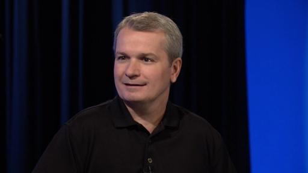[MP4] [WMV] [0:57:03] [2012/07/31]It seems as though all of us are actively trying to cram more and more features, functionality, and speed out of everything we use. While the world seems faster paced today than it ever has been in…
BTC: Henry Sanders - More than an Engineer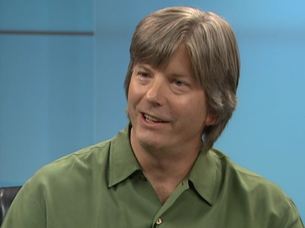[MP4] [WMV] [0:57:36] [2011/07/20] At the heart of every computer, every operating system, every problem, is an engineer. An engineer may not live the glorious rock-star life of your favorite musician, but it is through their efforts…
Scott Guthrie: Power To and For The People [MP4] [0:59:59] [2011/06/04]
[MP4] [0:59:59] [2011/06/04] At a certain level, computers are all about giving computational power and resources to the common man. Even though many of you may not remember it, it wasn't that long ago when computers were tools…
Behind the Code: Charlie Kindel - Doing What It Takes To Make A Customer Successful [MP4] [WMV] [0:59:45] [2011/03/18]
[MP4] [WMV] [0:59:45] [2011/03/18] When thinking about businesses, large or small, it can be easy to lose sight of the individual. For the individuals within those companies, it can be difficult to see the role they play in the big…
BTC: David Heckerman - Biology, Machines, Medicine and Physics[MP4] [WMV] [0:55:49] [2010/07/15]
From something as simple as a paperclip to far more complex machines such as computers, there are a wide variety of machines forming a regular part of our daily lives. None, however, come close to…
Erik Meijer: Rebel with a Cause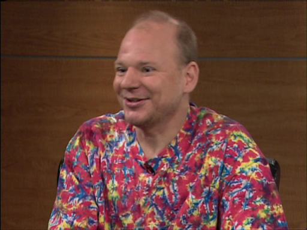[MP4] [WMV] [0:59:29] [2010/03/05]
Over thousands of years, language has evolved in order to provide mankind a mechanism for making it easier to communicate with one another. Today, the world is filled with a wide variety of…
Nick Baker: Xbox Architecture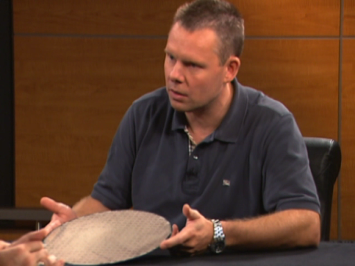[MP4] [WMV] [0:59:07] [2009/12/03]Nick Baker is General Manager for Xbox Architectural Design. After graduating from Imperial College London in 1990, he found his way to Apple and worked on the team that tried to create a specialized…
Minds, Machines, and Intelligence: A Conversation with Eric Horvitz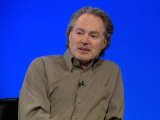[MP4] [WMV] [0:59:54] [2009/02/11]Microsoft is well known for Windows, Office, .NET, Xbox, Zune and a long list of other products and technologies.
Less discussed however, is a group at Microsoft that isn’t necessarily focused on…
Richard Ward: Windows Architecture - Past, Present and Future[MP4] [WMV] [0:58:34] [2008/11/08]
Artists embody a diverse set of talents and interests. This gives them a rich array of experiences to draw upon in their work. In the same way, Richard Ward brings an eclectic background and…
Rebecca Norlander - Challenge and Success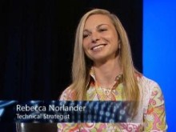[MP4] [WMV] [0:58:35] [2008/08/09]
In the often male dominated world of computers, Rebecca Norlander has made a name for herself by taking on big challenges, and proving she has what it takes to deliver results. Join us to learn how…
Terry Crowley: On the History and Evolution of the Internet[MP4] [WMV] [0:58:33] [2008/05/09]
It is hard to imagine a time when the internet wasn’t a part of our lives. It has been over a decade since the Web transformed the Internet from an academic exercise into a common household…
Patrick Dussud: Managing Garbage Collection[MP4] [WMV] [0:58:36] [2008/02/09]Where do objects go when they aren't used anymore (and how to know that they are no longer useful to the executing code that created them)? Might seem like a silly question to most developers, but…
Mohsen Agsen: Bridging the Gap between PC and Enterprise, Developer and Designer[MP4] [WMV] [0:58:34] [2007/10/06]A rolling stone gathers no moss. What it does gather, however, is a great deal of experience. During his long career at Microsoft, Mohsen Agsen has been actively avoiding gathering moss. LAN Manager,…
Peter Spiro: The power of having fun, building great databases, and leadership[MP4] [WMV] [0:58:38] [2007/08/10]Don't get a real job until you're 30. This is Technical Fellow Peter Spiro's advice, and something he fell just short of doing. Discover how this forestry student got a job at Digital Equipment…
Catharine van Ingen: Software Architecture, Global Warming, MIPS and Hydrology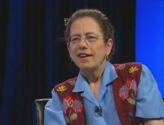[WMV] [0:58:33] [2007/06/16]What do global warming, a scientific instrument weighing about 4500 tons and bill collection have in common? The once Berkeley ‘hippie chick’ turned Software Architect Catharine van Ingen. Catharine…
Rico Mariani: Writing better, faster code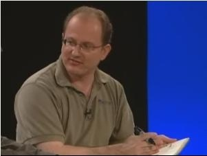[MP4] [WMV] [0:58:34] [2007/02/24]For eighteen years at Microsoft,
Rico Mariani’s contagious enthusiasm for technology has inspired countless others to write better and faster code. Most people inside Microsoft know this software…
Rob Short: Operating System Evolution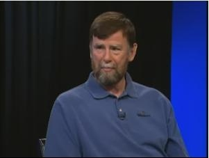[WMV] [0:58:22] [2006/12/09]Rob Short is an operating system pioneer. He helped Microsoft transition from the 1980s with DOS and 16 bit windows into the 32 bit world with Windows NT in the 1990s. More recently, Rob was part of…
Tony Williams: Co-inventor of COM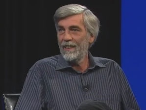[WMV] [2006/03/04]This episode features the co-inventor of COM, software architect, Tony Williams. In his eighteen years at Microsoft, Tony has worked on the Windows team, in Microsoft Research, and on Office. His cont…
Mark Zbikowski - From DOS 1.0 to Windows Vista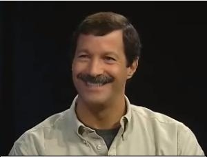[MP4] [WMV] [1:05:28] [2006/05/18]This is Behind the Code’s pilot episode with Core File Services architect, Mark Zbikowski. Mark began his career at Microsoft in 1981, working on DOS 1.0 as a designer, coder and liaison with IBM. His…
Conversation with scientist, engineer and database legend Jim Gray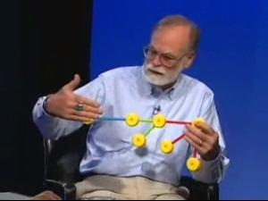[WMV] [2006/03/04]This episode features Jim Gray. He is a "Technical Fellow" in the Scaleable Servers Research Group (Sky Server, Terra Server) and manager of Microsoft's Bay Area Research Center (BARC).…
Life and Times of Anders Hejlsberg[WMV] [2006/02/02]This episode features industry luminary, Anders Hejlsberg. Before coming to Microsoft in 1996 he was well noted for his work as the principal engineer of Turbo Pascal and the chief architect of the …